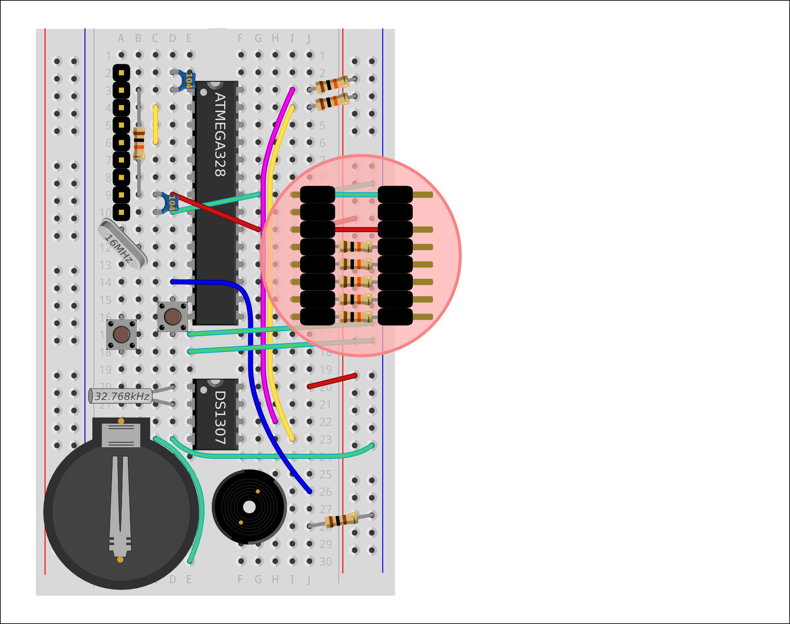

MENU
Project
Intro
Circuit
Programs
Troubleshoot
Buying
Teaching
Other Projects
...blink an LED
...paint with light
...make a Banana Piano
...test your melody memory
...invent a new Clock
Kits
How to Choose
Product List
Shrimp Bundle
Persistence of Vision
Conductive Keyboard
'Simon' Memory Game
Alarm Clock
Teaching
Workshops
Resources
Testimonials
Special Offers
More
About Us
Contributing
Licensing
Feedback
Contact
Prev
1
2
3
4
5
Next
Building the Liquid Crystal Clock
Getting started
Attach Adaptor
Rainbow cable
Rainbow cable
Building the Liquid Crystal Clock
Getting started
Attach Adaptor

Rainbow cable
Rainbow cable